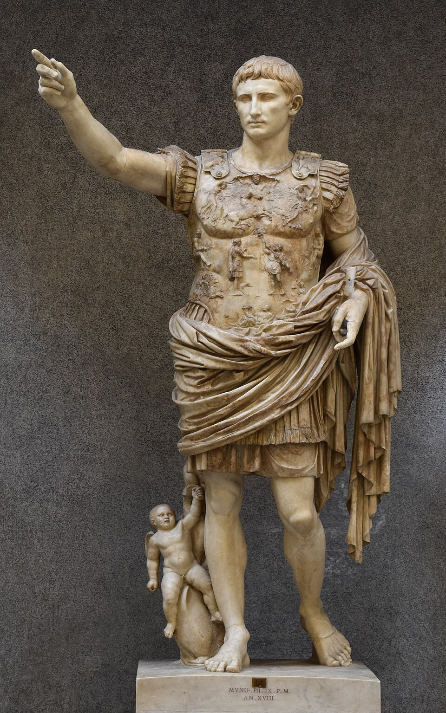
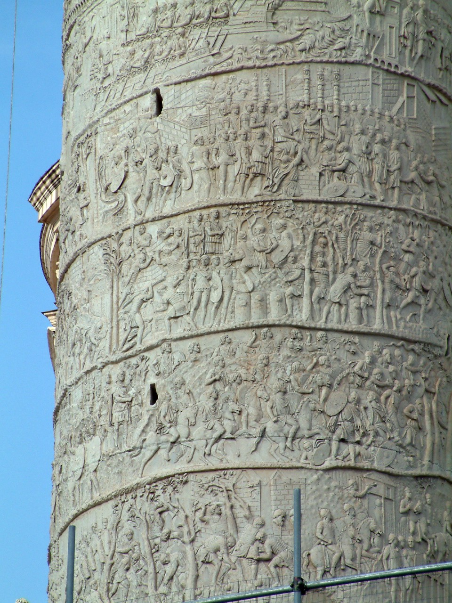
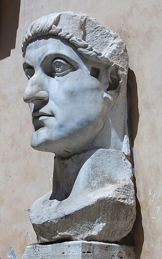
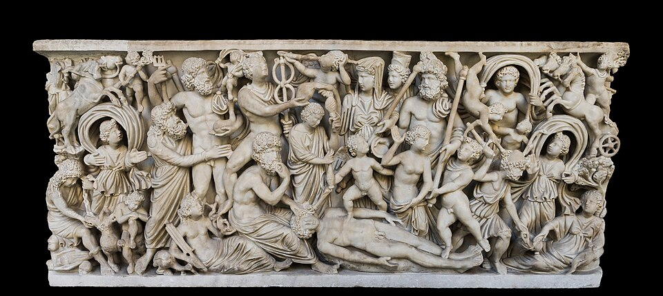
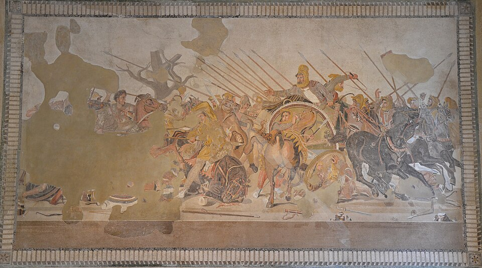
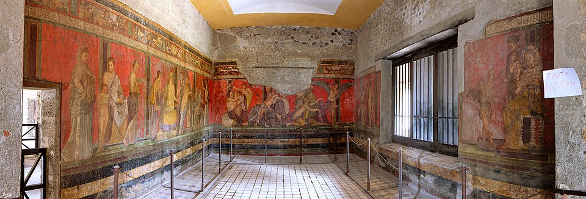

図解：ローマの美術
ローマ美術の展開
- 前2世紀〜
 ギリシャ美術が流入ポエニ戦争の戦利品
ギリシャ美術が流入ポエニ戦争の戦利品
憧れの教養になる - 帝政の始まり

理想化された皇帝像アウグストゥスが
ネオ・アッティカ派を採用 - 113年

功績を記録する浮彫トラヤヌス帝の時代
写実的に一連の流れで - 3世紀〜


帝政末期の威圧的な像政治・経済の破綻
目を見開く皇帝像
ギリシャ美術をどう受け入れたか
重要人物
皇帝
政治家・軍人
ローマの拡大と建築技術
小さな都市から地中海の帝国へ
動画 0:36～「ローマは一日にして成らず」。スペインの作家セルバンテスは、『ドン・キホーテ』でこのように記しました。巨大なローマ帝国ができるまでにも、長い年月がかかったという意味です。ローマの建設時期は明確ではありませんが、建国神話では紀元前753年とされています。狼に育てられた双子の兄弟ロムルスとレムスが戦い、勝利したロムルスが建国したという伝承です。
ローマは、最初はイタリアの小さな都市国家にすぎませんでしたが、周辺の都市を次々に攻め落とし、やがて地中海世界全体に覇権を打ち立てました。およそ800～900年近い年月をかけて広がったのです。もともとはエトルリア人に支配されていましたが、紀元前3世紀頃にイタリア半島を統一しました。その後、北アフリカを支配していた宿敵カルタゴを撃破し、東地中海へ進出してマケドニアを属州にすることで、広大な領土を築きました。
アーチ、水道橋、街道と浴場
動画 1:24～領土が広がるにつれ、ローマ人は建築を得意分野としていきました。広大な地域を征服するには、道路の整備などが不可欠だったためです。なかでも、ローマ建築に特徴的な半円アーチによって、大規模な建築に耐える強度を確保できたことが大きな要因でした。
作品・個体または画像条件を確定できず掲載を保留しています。画面は丘上の宮殿遺構と思われるが、赤枠の壁体を同一個体として確定できない。チルコ・マッシモという名称と前4世紀という画面の年代を、そのまま宮殿遺構へ移せないため保留。候補写真で代用しない。
《アーチのある煉瓦遺構（個体未確定）》
- 作者
- 未確定
- 制作時期
- 未確定
- 所在地・所蔵
- ローマ、チルコ・マッシモに面するパラティーノ丘の可能性
- 素材・形式
- 遺構・建築
出典・画像について
作品・個体または画像条件を確定できず掲載を保留しています。画面は丘上の宮殿遺構と思われるが、赤枠の壁体を同一個体として確定できない。チルコ・マッシモという名称と前4世紀という画面の年代を、そのまま宮殿遺構へ移せないため保留。
制作メモ
候補写真で代用しない。
住民の飲料水を確保するため、周辺の高地から水道を引き、水道橋を建設しました。また、軍を迅速かつ効率よく運用するため、街道を張り巡らせました。庶民の娯楽の場も作られるようになり、入浴もその一つでした。古代ローマの設計技師を主人公とする漫画『テルマエ・ロマエ』もヒットし、こうした文化が親しまれるきっかけになりました。
ギリシャ美術の受容と皇帝の美術
異なる美術を受け入れるローマ
動画 2:11～古代ローマの美術は、いくつかの美術が融合してできています。もともとイタリアに根付いていたエトルリア美術、新しく入ってきたギリシャ美術、そしてローマ人の得意な建築技術が合わさり、頂点に達しました。征服した地域の美術を滅ぼす国もありましたが、ローマはそれをしませんでした。
この受容には、ローマの支配方法も関係したのでしょう。戦争に勝った後も、多くの場合、相手を完全に服従させるのではなく、ローマの監視下で自由を認め、支配を受け入れさせていました。他国の強い抑圧を受けるより、比較的緩やかなローマの支配を受け入れるほうがよいと思わせる方法です。こうした緩やかさが、他地域の美術を受け入れる寛容さにつながったのでしょう。
大きな転機となったのは、北アフリカのカルタゴとのポエニ戦争です。特に第二次ポエニ戦争では、戦利品としてギリシャ美術が大量に入ってきました。以前から植民地を介してギリシャ美術に触れていましたが、紀元前2世紀以降に入ってきた美術品は、質・量ともに比較にならないほどでした。ローマ人は圧倒され、ギリシャ文化は憧れの対象となり、必須の教養にもなりました。
ギリシャ彫刻への憧れとコピー
動画 3:19～ギリシャ彫刻、とりわけクラシック期の彫刻は、誰もが憧れるものでした。しかし、オリジナルを手に入れることはほとんど不可能だったため、ローマでは大理石でコピーを作る技術が発達しました。ローマの貴族や富裕層はギリシャの芸術家を保護し、ローマ人の要望に応えてギリシャの芸術品を作る一派、ネオ・アッティカ派の美術は、帝政期に公用美術として採用されました。
画像を拡大 ＋
《ヘルメスと幼いディオニュソス》
- 作者
- プラクシテレスに帰属（議論あり）
- 制作時期
- 紀元前350～330年頃とされる
- 所在地・所蔵
- オリンピア考古学博物館
- 素材・形式
- 大理石彫刻・浮彫
出典・画像について
ギリシャ美術への憧れを示す例として紹介された像です。プラクシテレスへの帰属には議論があります。
画像出典：Paolo Villa／編集：MenkinAlRire
CC BY-SA 4.0
作品情報：作品・画像・利用条件
理想化された皇帝と歴史浮彫
動画 3:41～ネオ・アッティカ派の芸術家は、コピーだけでなく、ローマ人の依頼に応じて個人の彫像などの新作を作ることもありました。ローマ最初の皇帝アウグストゥスの彫像、《プリマ・ポルタのアウグストゥス》がその例です。ギリシャのクラシック期の表現を人物像に当てはめ、本人に完全に似せるのではなく、少し格好よく表現しています。ギリシャの理想主義を、都合よく用いたものといえます。

《プリマ・ポルタのアウグストゥス》
- 作者
- 作者不詳
- 制作時期
- 紀元後1世紀（画面：14～29年頃）
- 所在地・所蔵
- ヴァティカン美術館、キアラモンティ美術館ブラッチョ・ヌオーヴォ、2290
- 素材・形式
- 大理石彫刻・浮彫
出典・画像について
画像出典：Joel Bellviure
CC BY-SA 4.0
作品情報：作品・画像・利用条件
アウグストゥスは、政治家マエケナスらの教示によって、ネオ・アッティカ派を公用美術として採用した人物です。帝政下のローマでは、皇帝の素晴らしさを称えるため、歴史浮彫が盛んになりました。彫像の鎧にも浮彫彫刻があり、神話やローマ軍の戦果を主題としています。これには、皇帝が神々と並ぶほど偉大であることを示す意味もありました。
トラヤヌス帝の功績を記録する
動画 4:35～トラヤヌス帝の時代には、皇帝の功績が浮彫によって一連の流れとして表されました。栄光を称えるだけでなく、戦果を記録する意味もあります。写実的な表現には、誰が何をしたのかを分かりやすくする目的もありました。一方で、強調したい人物はあえて大きく表されています。メソポタミアのアッカド美術にも、同じような表現が見られました。

《トラヤヌスの記念柱（浮彫部分）》
- 作者
- ダマスカスのアポロドロスに帰属
- 制作時期
- 113年
- 所在地・所蔵
- ローマ、トラヤヌスのフォルム
- 素材・形式
- 大理石彫刻・浮彫
出典・画像について
帝政末期の不安と皇帝の威厳
動画 5:00～こうした写実的な表現も、帝政末期には変化します。3世紀のローマでは、政治・経済ともに破綻し、彫刻にもその不安を表したような表現が現れました。人物が密集する表現も見られます。皇帝の彫像は、目を大きく見開いた威圧的な表現になり、それによって皇帝の威厳を示そうとしました。頭部だけでも高さ2.5メートルに達する像がありました。

《プロメテウスによる人間創造を表す石棺》
- 作者
- 作者不詳
- 制作時期
- 紀元300年頃（3世紀末～4世紀初頭）
- 所在地・所蔵
- ナポリ国立考古学博物館、収蔵番号6705（ポッツオーリ出土）
- 素材・形式
- 大理石彫刻・浮彫
出典・画像について
作品情報：作品・画像・利用条件

《コンスタンティヌス大帝の大理石巨像頭部》
- 作者
- 作者不詳
- 制作時期
- 313～324年
- 所在地・所蔵
- ローマ、カピトリーノ美術館、コンセルヴァトーリ宮中庭
- 素材・形式
- 大理石彫刻・浮彫
出典・画像について
絵画・建築・ポンペイ
絵画とモザイクの装飾
動画 5:28～ローマ人がギリシャ人芸術家に作らせたのは、彫刻だけではありません。住居の壁面装飾として、絵画を描かせることもありました。ヘレニズム期には絵画が発達していましたが、現存するもののほとんどはローマから出土したものでした。
なかでも、色鮮やかな大理石を敷き詰めて作った《アレクサンドロス・モザイク》は、傑作として知られています。モザイクとは、絵の具で描く代わりに、細かな破片などを敷き詰めて図像を作る技法です。古代ローマの富裕層は、こうしたモザイク画を床にはめ込んでいました。


画像を拡大 ＋《アレクサンドロス・モザイク（通称《イッソスの戦い》）》
- 作者
- モザイク制作者不詳
- 制作時期
- 紀元前100年頃
- 所在地・所蔵
- ナポリ国立考古学博物館、収蔵番号10020（ポンペイ、ファウヌスの家出土）
- 素材・形式
- モザイク
出典・画像について
画像出典：Carole Raddato
CC BY-SA 2.0
作品情報：作品・画像・利用条件
コロッセウムとバシリカ
動画 6:04～ローマの建築には、もともとの優れた技術にギリシャの要素を取り入れた点も特徴として挙げられます。円形闘技場コロッセウムには、ローマ建築の特徴である円を用いた表現と、ギリシャ建築の柱の様式が融合しています。柱は上から、コリント式、イオニア式、ドーリア式が用いられています。
 画像を拡大 ＋
画像を拡大 ＋
《コロッセウム（フラウィウス円形闘技場）》
- 作者
- 建築家不詳
- 制作時期
- 80年頃
- 所在地・所蔵
- ローマ、イタリア
- 素材・形式
- 遺構・建築
出典・画像について
バシリカと呼ばれる世俗の公堂にも、同じ傾向が見られます。外側にはローマに特徴的な半円アーチ、内部の柱にはコリント式が用いられました。高い建築技術に、ギリシャの要素も取り入れていたのです。
 画像を拡大 ＋
画像を拡大 ＋
《マクセンティウスとコンスタンティヌスのバシリカ》
- 作者
- 建築家不詳
- 制作時期
- 4世紀初頭（312年頃）
- 所在地・所蔵
- フォロ・ロマーノ、ローマ
- 素材・形式
- 遺構・建築
出典・画像について
ポンペイに残る生活と秘儀
動画 6:43～皇帝や富裕層のための作品だけでなく、人々の生活が分かる美術品も残っています。その多くが、火山噴火で埋もれた古代都市ポンペイの遺跡から発掘されました。ポンペイは現在のナポリ近郊に栄え、商人専用の娼館などもあり、快楽の都市と呼ばれました。明るい雰囲気には、エトルリアとの共通点も感じられます。
ポンペイは栄えていたとされますが、西暦79年の火山噴火によって地中に埋もれ、多くの人が犠牲になったとされています。一方、地中に埋もれたことで、18世紀中頃の発掘時には、かなりきれいな状態で都市が残っていました。
秘儀荘の壁画《ディオニュソスの秘儀》は、特に保存状態がよいことで知られています。「秘儀」とは、文字どおり秘密の儀式です。ディオニュソスは酒の神バッカスのことで、この壁画は女性信者たちの陶酔の様子を描いています。


画像を拡大 ＋《秘儀荘のディオニュソスの秘儀壁画》
- 作者
- 作者不詳
- 制作時期
- 紀元前50年頃
- 所在地・所蔵
- 秘儀荘、ポンペイ
- 素材・形式
- 壁画
出典・画像について
秘儀荘の壁画が残る部屋全体のパノラマ写真です。画面の50年頃という表示と区別し、作品年代には紀元前を明記しています。
画像出典：MatthiasKabel
CC BY-SA 3.0
作品情報：作品・画像・利用条件
ローマの遺産
帝国の分裂と美術の継承
動画 7:40～3世紀頃から政治・経済が不安定になったローマは、最終的に東西に分裂しました。その後、美術はキリスト教美術やビザンティン美術へと分かれていきます。
「ローマも、いつか滅びる日が来るのだろうか」。紀元前146年、宿敵カルタゴを滅ぼした際、軍人小スキピオはこのように語ったとされます。古代ローマ帝国は、その数百年後に滅びることになりました。しかし、人々が築いた文化や芸術は、今も私たちの生活に根付いています。後のルネサンスで再び花開き、芸術のさらなる発展にも寄与しました。国としてのローマは滅びても、残されたものは生き続けています。
要点まとめ
- ローマは建国神話では紀元前753年にロムルスが建国したとされる。小さな都市国家から始まり、紀元前3世紀頃にイタリア半島を統一し、カルタゴを撃破してマケドニアを属州とするなど、地中海世界全体に覇権を広げた。
- ローマ人は半円アーチによる強度を生かした建築を得意とし、水道橋、街道、浴場を建設した。
- ローマ美術はエトルリア美術、ギリシャ美術、ローマ人の建築技術の融合でできている。第二次ポエニ戦争で大量のギリシャ美術が入り、ギリシャ文化は憧れと教養の対象となった。
- ギリシャ彫刻の大理石によるコピーの技術が発達し、ギリシャの芸術品を作るネオ・アッティカ派が帝政期に公用美術となった。《プリマ・ポルタのアウグストゥス》はクラシック期の表現で皇帝を理想化している。
- 帝政下では皇帝を称える歴史浮彫が盛んになり、トラヤヌス帝の時代には功績が一連の流れとして記録された。3世紀の帝政末期には、不安を表すような表現や、目を見開いた威圧的な皇帝像が現れた。
- 住居の壁面には絵画が描かれ、床には大理石のモザイクがはめ込まれた（《アレクサンドロス・モザイク》）。
- 円形闘技場コロッセウムでは、円を用いたローマの表現と、ドーリア式・イオニア式・コリント式の柱が融合している。公堂バシリカも半円アーチとコリント式を用いた。
- 西暦79年の火山噴火で埋もれたポンペイからは生活を伝える美術が発掘され、秘儀荘の壁画《ディオニュソスの秘儀》は保存状態がよい。
- ローマは東西に分裂し、美術はキリスト教美術やビザンティン美術へ分かれた。その文化は後のルネサンスで再び花開いた。
確認問題
答えを考えてから開いてください。選択問題は選ぶとすぐ正誤と解説が出ます（選択肢の順番は開くたびに変わります）。各問題のリンクから該当の章や作品カードへ戻れます。
選択問題：0／5問回答・正解0
A. 一問一答答えを考えてから開く
問1大規模な建築に耐える強度を確保できた、ローマ建築に特徴的な構造は何か。
答えを見る
問2ローマ人の要望に応えてギリシャの芸術品を作り、帝政期に公用美術として採用された一派を何と呼ぶか。
答えを見る
問3絵の具で描く代わりに、細かな破片などを敷き詰めて図像を作る技法を何と呼ぶか。
答えを見る
B. 4択選ぶとすぐ正誤と解説
問4戦利品としてギリシャ美術が大量にローマへ入ってくる大きな転機となった戦争はどれか。
→ 本文で確認（異なる美術を受け入れるローマ）
問5帝政下のローマで、皇帝の素晴らしさを称えるために盛んになった浮彫を何と呼ぶか。
→ 本文で確認（理想化された皇帝と歴史浮彫）
問6西暦79年の火山噴火で地中に埋もれ、生活の分かる美術品が多く発掘された古代都市はどこか。
→ 本文で確認（ポンペイに残る生活と秘儀）
C. 図版問題画像を見て答える
問7この彫像の名前を答えよ。本人にどの程度似せて表されているか。
答えを見る
問8この円形闘技場の柱に用いられた様式の組合せとして正しいものはどれか（上から順に）。
→ 作品カードで確認
問9特に保存状態がよいことで知られるこの壁画の名前はどれか。
→ 作品カードで確認